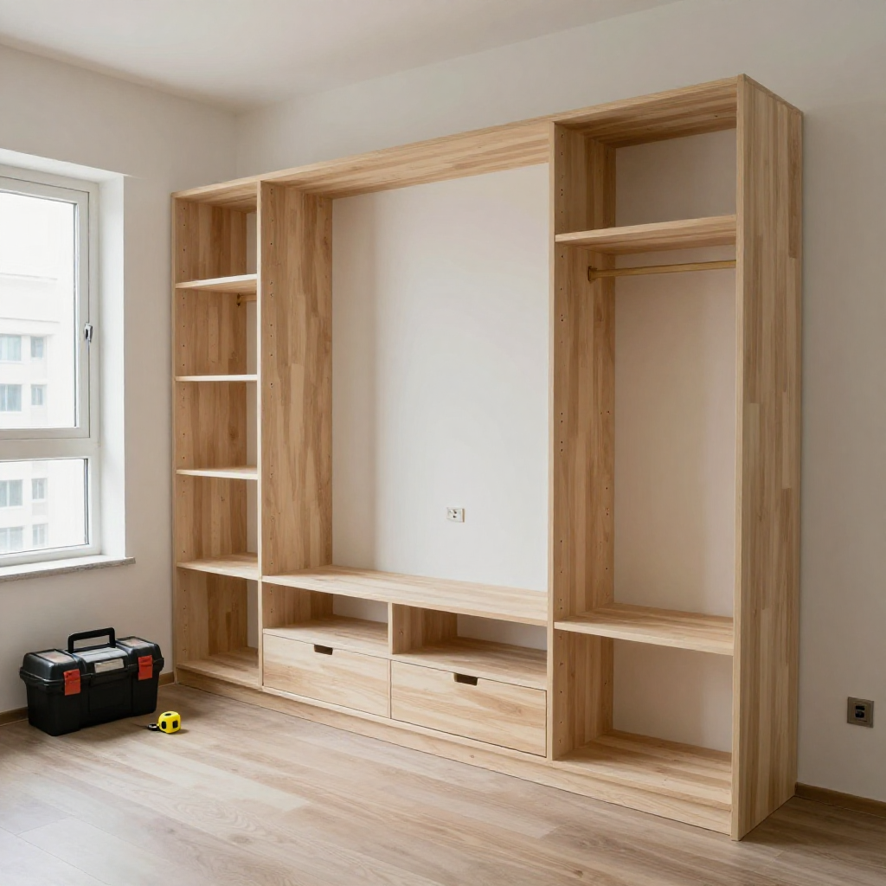
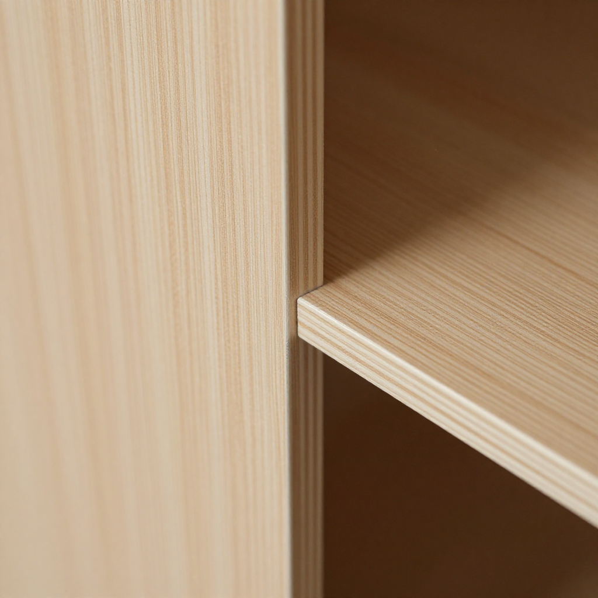
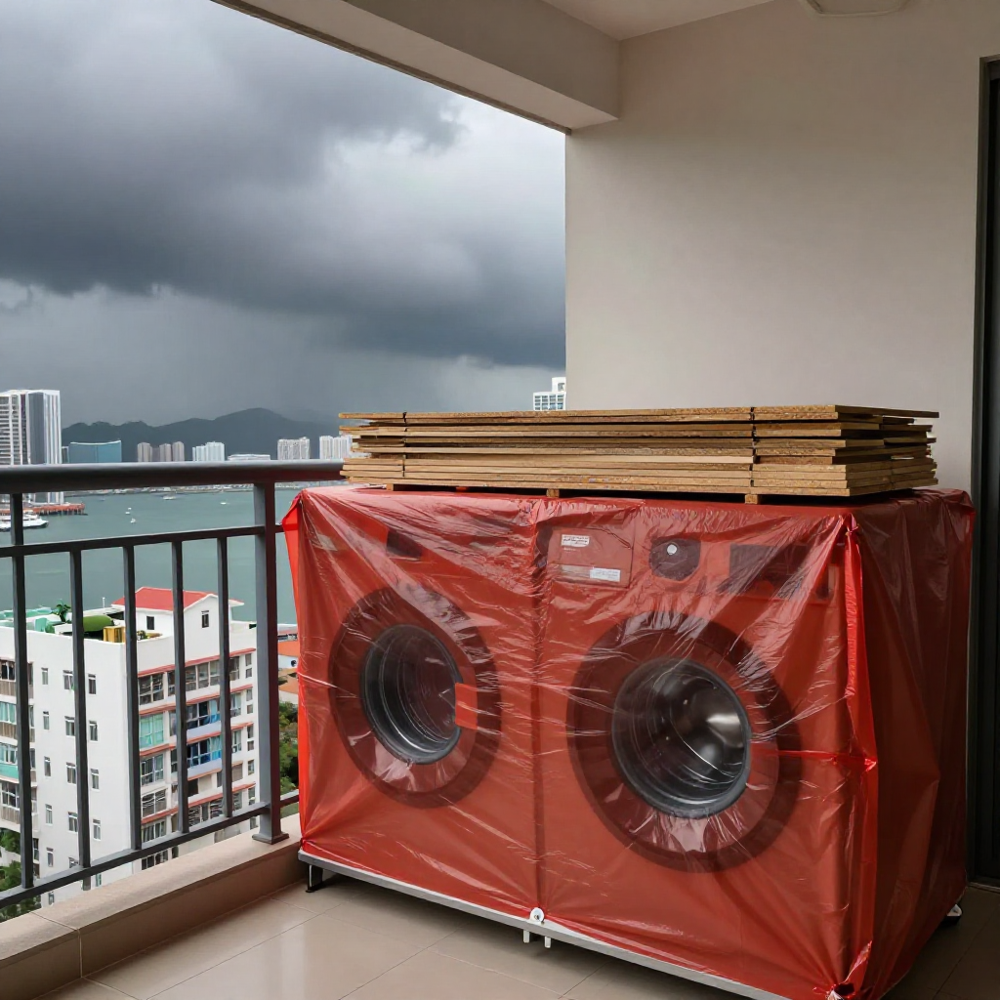
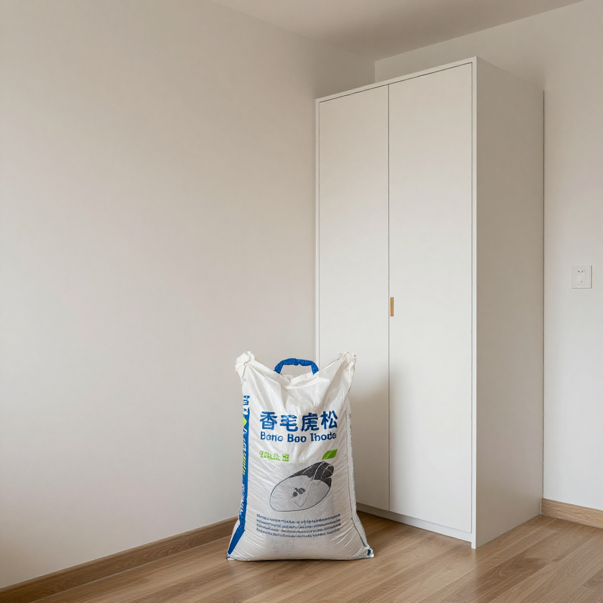
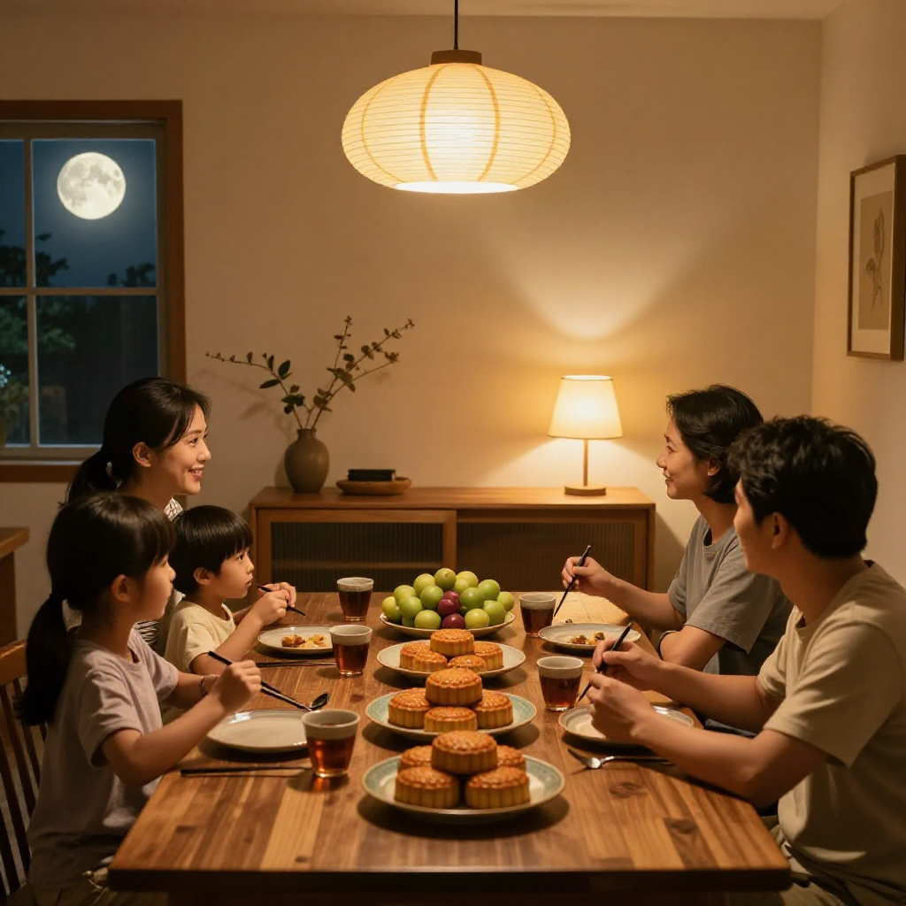

打風前最後趕工記——觀塘順天邨林師傅同張丹楓講趕工三招

📍 場景：觀塘順天邨公屋單位｜主訪：林師傅（林志強，二十五年九龍區全屋訂造）｜記錄：張丹楓｜整理：雲蕾｜日期：2026 年 9 月 25 日（中秋正日）｜同行：徒弟阿俊｜WhatsApp 報價：852 5190 2328
序幕：中秋正日嗰個回訪電話
今朝八點，我手機響。林師傅把聲好精神：「丹楓，今日中秋，你同雲蕾得閒就過嚟順天邨睇下——周生嗰套訂造傢俬，趕得切，今晚一家人喺新櫃前面食團圓飯。」
我同雲蕾對望一眼。即刻落樓搭車。三日前嘅事我哋記得好清楚：9 月 22 號下晝，天文台掛住一號，話緊可能轉三號，林師傅同徒弟阿俊喺呢個單位趕最後兩隻衣櫃封邊。我哋今日嚟，一來係中秋探下老行尊，二來係想將林師傅打風前趕工嗰三招，一五一十記低。
林師傅今年五十幾，細個跟阿爸喺土瓜灣細工場做傢俬學徒，九龍區公屋、居屋、舊樓翻新做咗二十五年。周生一家四口呢個單位，電視櫃、餐邊櫃、兩間房衣櫃加書枱床，全部 18mm 夾板加焗漆板面，十幾萬落樓。趕——因為周生個仔十月擺酒，要擺傢俬做新房。
「林師傅，嗰日下晝一點幾，你哋仲有兩個衣櫃門未封邊，點解咁有信心話做得完？」
「做得完都要做完，唔係等陣場傢俬俾雨淋濕，周生返嚟鬧我哋。未交貨之前淋壞，要自己孭——保險唔包，師傅個名就包。」
雲蕾喺記事簿寫低第一句：「未交貨，師傅孭——打風前趕工唔係趕，係保。」
第一幕：封邊機嗰 180 度
林師傅帶我哋行去衣櫃前面，伸手摸一摸門板條邊：「你摸下，呢條邊，9 月 22 號下晝封嘅。當日我同阿俊講：膠溫到 180 度先落，165 度唔收貨。」
「師傅，爭 15 度有咩分別？部機錶上面都係綠燈。」
「分別就係打風落大雨返潮嗰陣爆唔爆邊。唔同廠嘅膠邊溶度唔同，焗漆板面同三聚氰胺板面收縮率差 0.2 個 mm 都唔得。香港夏天潮濕冬天乾燥，封得唔好，過兩個月就見裂痕。」
我問林師傅，呢啲係邊個教。佢笑：「邊個教？賠錢教。後生嗰陣有單嘢爆邊，成套衣櫃拆返重做，蝕咗三日人工。從此之後，封邊膠溫我親手較。」
雲蕾寫低第二句：「180 度唔係數字，係學費交返嚟嘅底線。」

第二幕：露台嗰塊紅尼龍布
講到下晝兩點，外面開始落毛毛雨，阿俊第一時間去關露台窗。林師傅話，嗰個反應啱，但仲爭一步。
「露台嗰組洗衣機櫃未收尾，啲夾板擺喺地下，淋濕咗點算？你先執晒啲板返入嚟，用紅色嗰張大尼龍布冚住已經裝好嘅電視櫃同衣櫃，底部塞幾張厚紙皮頂住——記住，唔好直接冚膠紙，膠紙黐住焗漆面會甩色。」
我望住露台，而家已經裝好曬，洗衣機櫃企得正正常常。林師傅拍一拍個櫃：「行內有句話：裝修佬最怕打風，仲怕過客拖數。客人訂造嘅傢俬成十萬蚊，未交貨淋壞，自己孭。」
雲蕾問：「點解係紅色嗰張？」林師傅哈哈笑：「紅色夠大，夠厚，全場得一張，用咗十年。邊張布冚邊套櫃，我心中有數。」

第三幕：四包大粗鹽
下晝四點，周生返嚟睇進度，成身汗，第一句就係「趕唔趕得切」。林師傅應完「趕得切阿仔十月擺酒」，跟住叫周生做一件事：落樓下五金鋪買四包大鹽袋——工業用嗰種大粗鹽，一包十幾蚊，擺喺四個房間角落吸水氣。
「林師傅你真係細心，我之前請過嗰個裝修佬，佢做完就走，邊有教我呢啲。」
「周生，做咗二十五年，我哋呢行最怕就係做完唔理。客人肯返嚟介紹朋友，先係真正嘅客。」
我今日特登問周生，嗰四包鹽後尾點。周生指一指牆角笑：「打風嗰兩日真係返潮，牆身出水珠，鹽袋面頭濕咗一層。過咗之後，櫃門開關冇事，焗漆面冇起泡。十幾蚊四包，抵到爛。」
雲蕾寫低第三句：「十幾蚊嘅鹽，保十幾萬嘅櫃——老師傅嘅數，係咁計嘅。」

尾聲：中秋夜嗰餐團圓飯
臨走嗰陣，周生留我哋：「今晚維園綵燈會亮到午夜，不過我哋唔出去迫——一家人喺新櫃前面食團圓飯，仲開心。」
我望住個廳：電視櫃企好，餐邊櫃上面已經擺咗月餅同水果。阿俊臨收工嗰日喺門口貼嘅紙仔已經撕走，上面寫住「中秋節（9 月 25 日）後開工」——今日就係 9 月 25 日，佢哋準時開工，準時交貨。
落樓嗰陣，林師傅同我講咗今日最後一句：「丹楓，裝修呢行，急唔嚟。最緊要係每次交到貨，客人笑住收貨。做裝修就係做人——每一個櫃、每一塊板、每一條封邊，都要對得住客人交畀你嗰份信任。」
返屋企嘅小巴上，雲蕾問我今日學到乜。我話三招：膠溫 180 度先落、露台執板紅布冚、鹽袋四角吸潮。但最緊要嗰句係林師傅嗰句——打風落雨唔可怕，怕嘅係做完唔理。
今晚維園有 20 個國家嘅綵燈，8 米高大榕樹燈亮到午夜。但對周生一家嚟講，最靚嗰盞燈，係新廳嗰盞——照住新櫃，照住團圓飯。
「做裝修就係做人。每一個櫃、每一塊板、每一條封邊，都要對得住客人交畀你嗰份信任。」
——林師傅（林志強）口述，張丹楓筆記，雲蕾整理，二〇二六年九月二十五日，觀塘工地

❓ 打風趕工三問
Q1：封邊爆邊係咩原因？點樣避免？
多數係膠溫唔夠或者膠邊同板面收縮率唔夾。林師傅嘅做法：膠溫要到 180 度先落機，唔同廠膠邊溶度唔同，唔好淨係睇綠燈。焗漆板面同三聚氰胺板面收縮率差 0.2mm 都唔得，封完要檢查每條邊黐實未。香港又濕又乾，封得唔好兩個月就見裂痕。
Q2：打風前，工地未交貨嘅傢俬點保護？
三步：第一，露台同窗邊嘅夾板全部執返入屋；第二，已裝好嘅櫃用大尼龍布冚實，底部塞厚紙皮頂住——唔好直接用膠紙冚，膠紙會黐甩焗漆面；第三，關實所有窗，門口貼聯絡紙仔。未交貨淋壞，保險唔包，師傅自己孭。
Q3：焗漆板面打風返潮點算？鹽袋真係有用？
焗漆板面最怕打風期間突然返潮。林師傅嘅土法：四包工業用大粗鹽，一包十幾蚊，擺喺每個房間角落吸水氣。周生實測：打風兩日牆身出水珠，鹽袋面濕一層，過後櫃門開關正常、焗漆面冇起泡。十幾蚊保十幾萬嘅櫃，記得打風過後將鹽袋清走，保持通風。
本文配圖均為 AI 場景示意圖，僅供場景參考，並非真實工地照片或業主影像。
想知你個單位裝修要幾錢？
📱 一鍵 WhatsApp 張丹楓